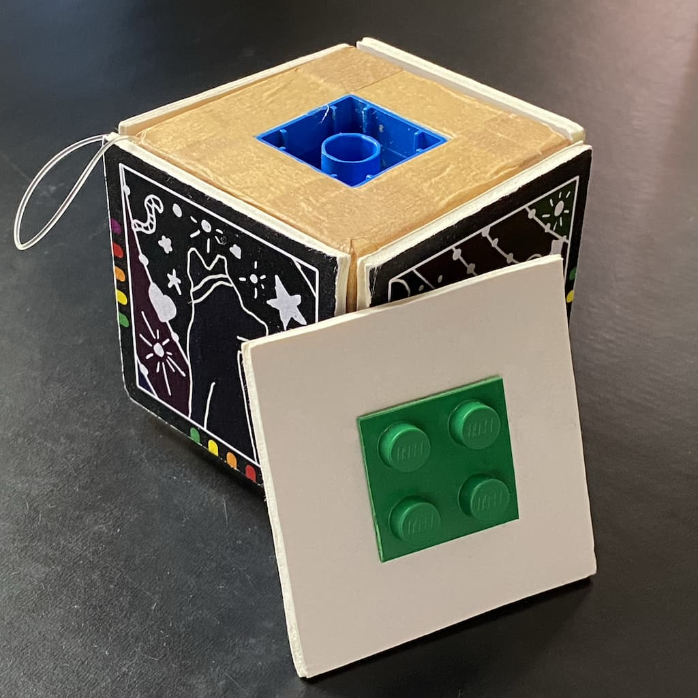
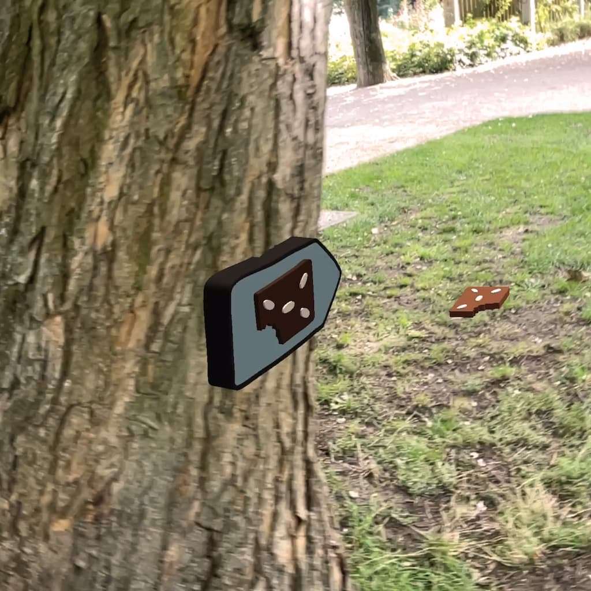
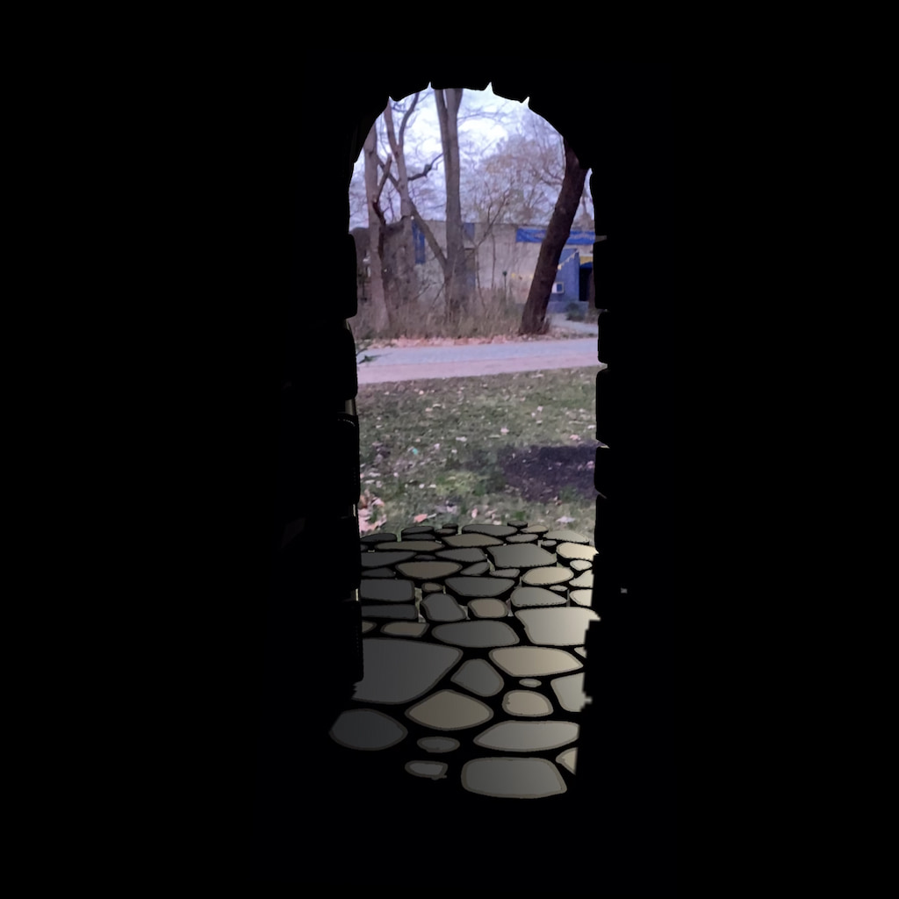
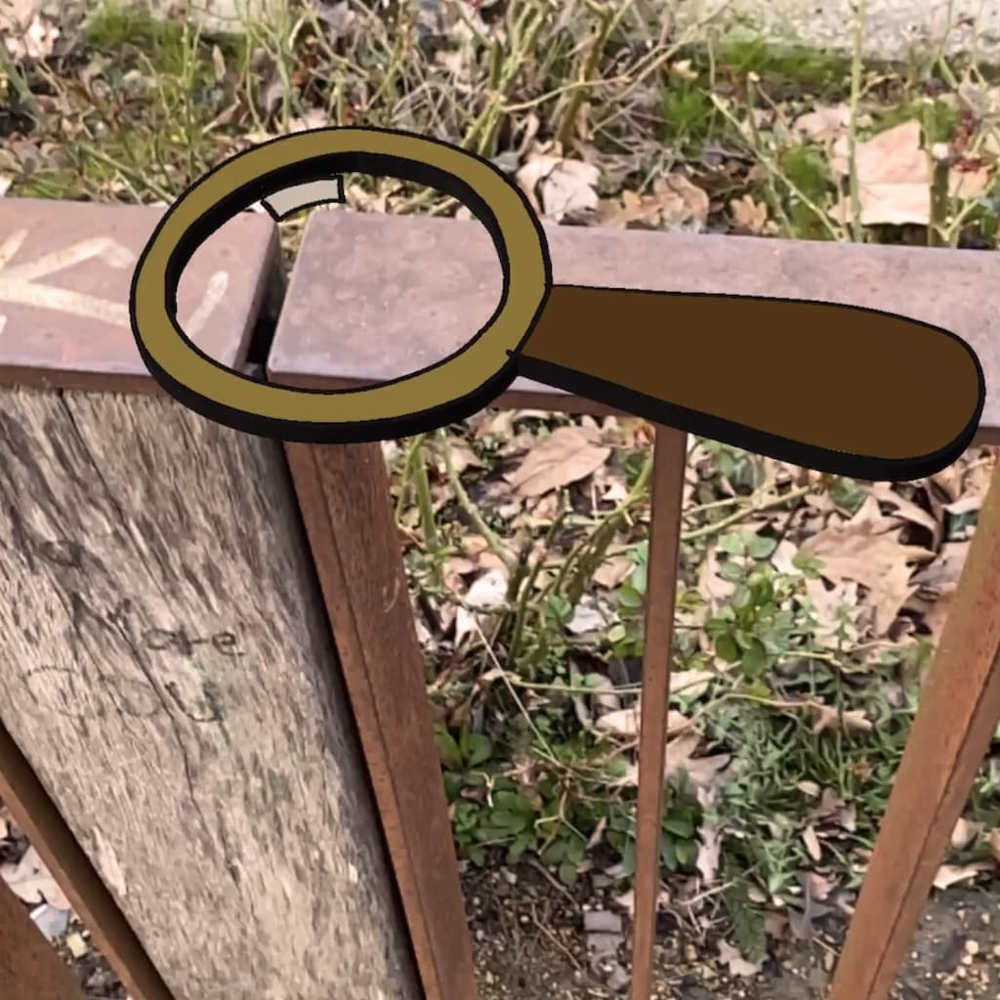

2021/22
Der Park der verschollenen Puppen
Location-based AR scavenger hunt and interactive story for children
Role
Interaction design
2D/3D artwork
Photogrammetry, character rigging and animation
Unity development
Cooperation
Laura Frey
Caroline Gutheil
Client
Figurentheater Grashüpfer
Interaction design
2D/3D artwork
Photogrammetry, character rigging and animation
Unity development
Cooperation
Laura Frey
Caroline Gutheil
Client
Figurentheater Grashüpfer
Background
The theatre approached me for creating an AR-based scavenger hunt with analogue intersections for their anniversary, taking place in the park around the premises.
The underlying plot for »Der Park der verschollenen Puppen« (»The Park of the Lost Dolls«) was provided by the theatre:
The venue is possessed by the evil entity of Boredom, who has bricked up the entrance. Unable to get in, the characters have fled to the park. From there they have to be brought back in order to defeat Boredom with their help.
Details
In a series of ideation workshops, we fleshed out the storyline for both the AR part and the analogue intersections along a specific course through the park and a sequence of selected characters from pieces in the theatre's repertoire.
I made photogrammetry scans and riggings of the featured characters and added standard animations to them.

From an early point in the project, we experimented with a marker-based hand interaction system to not be dependent on touch-based interaction. As we realised that this was more engaging and fun, I developed it into a cube system with interlocking sides that doubled as a reward collection system. As the game unfolds, collected physical reward items double as puzzle pieces that complete a cubic multi-2D marker.

I developed a completely offline location-tracking engine working on GPS and compass data and, where available, fixed positions and headings associated to tracked 2D/3D markers.

I divided the scavenger hunt into stations and individual actions, creating a modular, highly variable and reusable system.
This modular sequence could then be populated with the characters, clues (both fixed and takeaway), tools, portals and obstacles.
